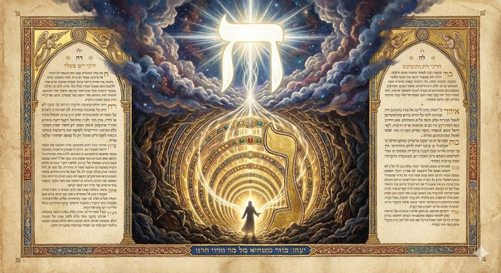
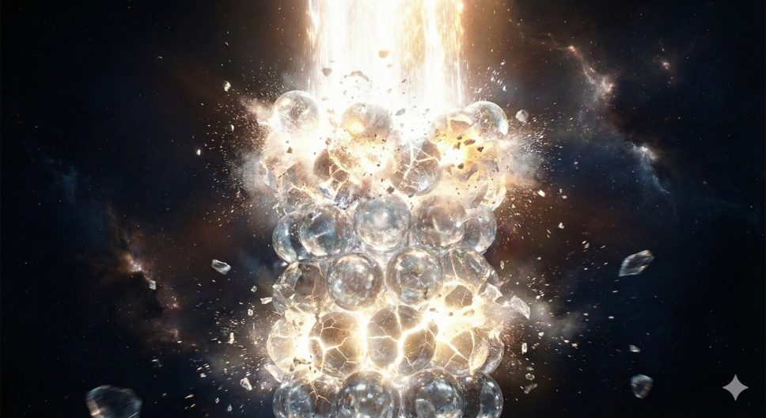
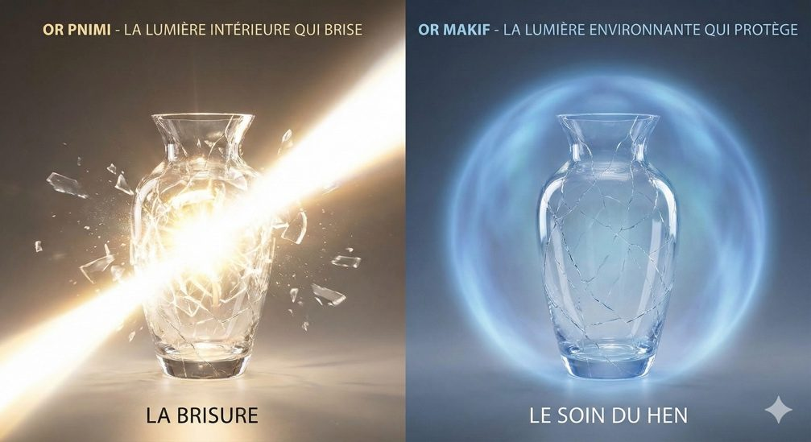

Sefer Berechit 5786
Le H’en dans la torah
Introduction
Au cours des dernières semaines, j’ai tenté d’exposer une perspective particulière sur les parachiots de Berechit en me focalisant sur une thématique : la notion de réparation du monde et la restauration des étincelles de sainteté dispersées.
Cette idée centrale trouve évidemment ses racines dans l’interprétation de la Torah selon les textes hassidiques majeurs, qui eux-mêmes s’inspirent de la mystique juive, notamment du Zohar et des enseignements du Ari Zal.
Toutefois, ce thème s’est imposé au cours de mes études et lectures, au travers d’un fil d’ariane, que je n’ai eu de cesse de dérouler pour découvrir la profondeur de cette thématique dans la Torah : la notion de Hen חֵן, que l’on pourrait traduire, trop facilement, par la Grâce.
Il m’a semblé (et les différentes recherches réalisées autour de ce sujet ont confirmé mon intuition) que son apparition dans la Torah, est bien plus qu'une simple faveur circonstancielle et sentimentale entre les acteurs de la Torah, ou entre D. vis-à-vis de ses créatures, il s’agit plutôt d’un réel mode opératoire de réparation du monde.
 |
Cette conviction est profondément consubstantielle d’un adage du Baal Chem Tov qui nous enseigne que là où le regard humain se pose avec désir, si ce désir est autorisé par le codex de la loi juive, alors il provient d’un mécanisme plus profond, parfois inconscient qui permet à l’Homme d’attirer des étincelles, des lumières qu’il doit élever selon son rôle et sa mission sur Terre. Le Hen est précisément ce mécanisme : c'est le Regard qui sait identifier la lumière captive dans l'obscurité pour l'extraire. Les grandes figures du Sefer Berechit viennent ainsi nous montrer comment activer ce regard, appliquant l'adage de nos Sages : « Ma'assé Avot Siman Lebanim » :les actions des pères sont des signes pour les enfants. |
|---|
Pour clore ce cycle d’étude sur Berechit, je vous propose une analyse exhaustive des 14 occurrences du mot Hen dans la Genèse à travers ce prisme d’études et je vous invite à vous référer aux parachiots de berechit où j’ai déroulé ce thème avec plus de profondeurs.
Un peu de théorie
Avant de nous aventurer dans cette modeste étude, il convient, telle une nécessaire préface, de poser les fondements de ces notions. Nous ne ferons ici qu'effleurer la surface d'un océan de sagesse, mais ces introductions sont indispensables.
Il faut d’abord saisir que la réalité tangible, ce monde matériel qui s'offre à nos sens, n’est que l'écorce la plus externe, l'ultime vêtement d'univers spirituels d'une élévation infinie. L'architecture de la Création, repose tout entière, sur une dialectique fondamentale : l'interaction entre les Lumières (Orot), émanations pures de l'Infini, et les Réceptacles (Kélim), vases destinés à contenir cette energie.
Ces lumières, fruits de restrictions et de dévoilements successifs, ont vocation à se déverser dans les mondes inférieurs. Si nos Sages empruntent au langage humain pour décrire ces processus ; parlant de « regard », de « parole » ou de « main »; il ne s'agit là que de métaphores pédagogiques pour approcher l’infini, car les mondes supérieurs sont exempts de toute corporéité.
Le Monde du Chaos et la Stratégie de l'Imperfection
Dans Sa sagesse insondable, et mû par le désir de nous octroyer une véritable part dans son Œuvre, le Créateur a instauré une imperfection volontaire. Il a façonné un univers primordial, bien antérieur au nôtre, structuré pour engendrer une notion de déséquilibre.
Ce monde, né de l'émanation divine que la mystique nomme « Le Regard », est le Monde du Tohu (le Chaos). Il porte ce nom car il était destiné à subir une rupture, une Shevirah, pour laisser place au Monde de la Réparation (Olam HaTikoun).
Quelle est la nature de ce chaos ? Nos maîtres nous révèlent qu'il réside dans une disproportion fatale. Les lumières issues du « Regard » y sont d’une intensité démesurée par rapport à la capacité de leurs réceptacles. De plus, cette architecture primitive est organisée selon un axe vertical unique. Telle est la logique d'un regard qui balaie de haut en bas : une linéarité absolue.

La Mécanique de la Brisure
Cette configuration engendre une tension. Imaginez une cascade de lumières chutant sans détour, les unes après les autres. Dans cet alignement vertical, chaque réceptacle ne reçoit pas seulement la lumière qui lui est destinée, mais doit également supporter la pression écrasante de toutes celles qui se précipitent à sa suite pour descendre plus bas.
Le vase, saturé, excédé par ce flux qu'il ne peut endiguer, finit par céder. C’est la Shevirat HaKelim, la Brisure des Vases. Incapables de contenir l'Infini, les réceptacles éclatent. Ils projettent alors leurs fragments à travers les abîmes, jusqu'à former la matière de notre monde inférieur.
Cependant, et c'est ici que réside le secret de l'espérance, ces débris ne sont pas inertes. Dans leur chute, les éclats de vases ont emporté avec eux des étincelles de sainteté (Nitsotsot). Ces parcelles de lumière divine gisent désormais, exilées et cachées, au cœur même de la matérialité et des écorces de notre réalité.
L'Œuvre du Tikoun : Tisser les Liens
Dès lors, la vocation de l'homme se dessine : il nous appartient de reconstruire. Le passage au Monde du Tikoun (Réparation) exige une nouvelle ingénierie spirituelle. Il ne s'agit plus d'empiler les forces verticalement, mais de les structurer en trois axes (Kavim), favorisant l'équilibre et l'interaction. C'est la trame même de l'histoire patriarcale :
La Rigueur à gauche (Gvurah, Itshak),
La Bonté à droite (Hessed, Avraham),
Et l'axe central de l'Harmonie (Tiféret, Yaakov), qui est Vérité et Beauté. C’est pourquoi les patriarches convergent vers Yaakov : pour que la force et la grâce dialoguent enfin, solidifiant ainsi l'édifice de la Création.
Le Partenariat Divin
| Ce processus de réparation passe par un tri méticuleux (Birour). La Torah nous révèle les outils de ce tri spirituel : notre Avoda (service divin), nos prières, notre étude, l'accomplissement des mitsvot. Mais ce travail s'opère aussi dans la trivialité du quotidien : l'acte de manger, boire, la reproduction humaine, ou la simple présence en un lieu précis, peuvent devenir des occasions de libérer une étincelle captive. |
|---|
Dieu a ainsi volontairement créé un monde "risqué", un monde de débris, pour faire de nous Ses associés, missionnés pour libérer les étincelles et réparer les kelims.
Ainsi, en écho au « Regard » créateur qui a initié le processus, notre propre regard doit apprendre à scruter le réel. Il nous incombe de discerner le bien enfoui dans le mal, de briser l'écorce de l'apparence, et de faire remonter les étincelles vers leur source. C’est là toute la noblesse de notre mission : transformer le chaos en harmonie.
L'histoire humaine, selon cette perspective, est une longue quête de récupération : il s'agit d'identifier ces étincelles perdues et de les remonter à leur source. C'est ici que le Hen intervient.
Le Hen : la dynamique d’extraction
Définition
Si le Hen est défini comme le "Regard Divin" qui apporte de la grâce à l’homme, il nous faut comprendre comment ce regard opère concrètement dans la matière brisée du Tohu. L'analyse de sa structure hébraïque nous livre les clés de cette "technologie" spirituelle.
Le Het et le Noun
L'architecture graphique du mot Hen (חֵן) n'est pas fortuite ; elle dessine le mouvement même du sauvetage.
Le Het (ח) :
Cette lettre, fermée sur le dessus et les côtés mais ouverte vers le bas, symbolise ici la Transcendance (le chiffre 8, au-delà de la nature). C'est la main divine ou le regard d'En-Haut qui se penche vers le monde inférieur sans s'y perdre.
Le Noun Final (ן) :
Contrairement au Noun courbé (נ), le Noun final est une longue droite qui descend en dessous de la ligne d'écriture. Dans la mystique, cela signifie que cette lettre a la capacité de descendre dans les abîmes, là où les étincelles sont tombées lors de la brisure des vases.
Ainsi, le mot Hen fonctionne comme un "grappin" spirituel : la force du Het (la transcendance) s'allonge via le Noun final pour aller chercher la lumière captive au plus profond des écorces (Klipot).
L'Action du Or Makif (Lumière Environnante)
Ce regard projette une lumière "Environnante" (Or Makif) et non pas une lumière "Intérieure" (Or Pnimi).
C'est ici que réside toute la subtilité de la réparation. Les vases du monde du Tohu se sont brisés précisément parce qu'ils ne pouvaient pas contenir la lumière intérieure trop intense. Réintroduire tout de suite une lumière directe provoquerait une seconde brisure.
Le Hen, en tant que Lumière Environnante, n'essaie pas de forcer l'entrée dans le réceptacle brisé. Au contraire, il l'enveloppe, le contient et le sécurise de l'extérieur. C'est un regard qui "embrasse" la réalité abîmée pour la maintenir en vie, le temps que la reconstruction se fasse.

Hokhmah Nistarah : Le Discernement de l'Invisible
Enfin, l'identification du Hen à la Sagesse Cachée (Hokhmah Nistarah) nous enseigne que la réparation ne se fait pas selon la logique humaine apparente.
Dans le chaos, le bien et le mal sont mélangés. Ce qui semble "bon" à l'œil humain peut être pourri de l'intérieur, et ce qui semble "mauvais" ou brisé peut contenir l'étincelle la plus précieuse.
Le Hen est cette capacité, issue de la Sagesse primordiale de Dieu, à voir l'invisible. C'est le "flair" spirituel qui permet à Noé, à Avraham ou à Moché de détecter le potentiel de sainteté là où personne d'autre ne le voit. C'est une sagesse qui ne juge pas sur l'apparence extérieure (le vase brisé) mais sur l'essence cachée (l'étincelle).
Par exemple, nous comprenons que lorsque la Torah dit "Noé trouva Hen aux yeux de Dieu", elle ne décrit pas une émotion divine. Elle nous dit que le Créateur a activé ce mécanisme précis : une lumière enveloppante capable de descendre dans l'abîme pour extraire la seule étincelle viable de cette génération, afin de commencer le processus de Tikoun.
Le Hen dans berechit
La Genèse vatipakahé’na
Adam et Hava viennent de fauter en consommant le fruit interdit. Leurs yeux se dessillent alors et ils prennent conscience de leur nudité.
Plusieurs notions permettent de relire la faute d’Adam et Hava non pas seulement comme une chute, mais comme la condition nécessaire au début de la réparation du monde. Le verbe utilisé par la Torah pour décrire le regard d’Adam et Hava sur le monde à la suite de la consommation du fruit interdit est :
« וַתִּפָּקַחְנָה עֵינֵי שְׁנֵיהֶם » vatipakahé’na ‘einei shenehem : les yeux des deux s’ouvrirent »
Nous avions alors expliqué que le cœur du mot תִּפָּקַח (tipakaḥ) vient de la racineפקח (pakaḥ), qui signifie « ouvrir », « éveiller », « dévoiler ». C’est le moment où le regard humain s’ouvre, où naît la conscience, mais cette conscience reste tournée vers l’extérieur. חַוָּה
(Ḥava) ouvre les yeux sur le monde, mais cette ouverture est aussi une chute qui révèle la dualité, la séparation, la honte, la nudité spirituelle que l’on doit comprendre comme l’absence de mitsvot au Gan Eden, qui permet de réparer le monde.
Car l’humain a inconsciemment besoin d’être l’associé du Créateur : il doit prouver l’utilité de son existence dans une création imparfaite par nature, et volontairement créée ainsi par le Créateur pour laisser une place à l’Homme.
À la fin du mot וַתִּפָּקַחְנָה (vatipakaḥna) apparaît ainsi la séquence חנה (Ḥanah), qui évoque discrètement une ouverture : celle du חֵן (Ḥen, grâce), de la grâce divine cachée que l’homme doit aller chercher dans le monde au fil de ses pérégrinations, de ses exils.
Hava ouvre donc ses yeux, et les nôtres, pour démarrer la réparation d’un monde en chaos, pour récupérer les étincelles divines perdues.
Noah : la lumière extraite du chaos
וְנֹחַ, מָצָא חֵן בְּעֵינֵי ה
Mais Noah trouva grâce aux yeux de l'Éternel.
C'est l'occurrence fondamentale. Le nom de Noah (נח) est l'inversion exacte de Hen (חן). Noah incarne le mécanisme par lequel le "Regard Divin" pénètre le chaos (Tohu) pour extraire les étincelles de sainteté avant la destruction par le déluge.
Avraham : l’hospitalité des lumières
וַיֹּאמַר: אֲדֹנָי, אִם-נָא מָצָאתִי חֵן בְּעֵינֶיךָ--אַל-נָא תַעֲבֹר, מֵעַל עַבְדֶּךָ
Et il dit : Seigneur, si j'ai trouvé grâce à tes yeux, ne passe point, je te prie, loin de ton serviteur.
Avraham utilise le Hen dans le contexte de l'hospitalité (Hachnasat Orchim). L'hospitalité d'Avraham est une forme d'extraction visant à transformer la sainteté potentielle chez les étrangers.
Le Salut de Loth
הִנֵּה-נָא מָצָא עַבְדְּךָ חֵן בְּעֵינֶיךָ, וַתַּגְדֵּל חַסְדְּךָ אֲשֶׁר עָשִׂיתָ עִמָּדִי לְהַחֲיוֹת אֶת-נַפְשִׁי
Voici, ton serviteur a trouvé grâce à tes yeux, et tu as montré ta grande bonté envers moi, en me conservant la vie...
Loth demande le Hen pour fuir la destruction de Sodome. En première lecture, il s'agit d'une extraction "partielle" ou en tout cas seulement physique : un sauvetage matériel sans la dimension spirituelle profonde d'Avraham, pour autant lorsqu’on approfondit, on constate que ce sauvetage participe à l’engendrement de la grand-mère du roi David et de la femme du roi Salomon, et permet ainsi de sauver ces lumières perdues parmi les nations.
La Reconnaissance par Lavan
וַיֹּאמֶר אֵלָיו לָבָן, אִם-נָא מָצָאתִי חֵן בְּעֵינֶיךָ; נִחַשְׁתִּי, וַיְבָרְכֵנִי ה בִּגְלָלֶךָ
Lavan lui dit : Si j'ai trouvé grâce à tes yeux ! J'ai appris que l'Éternel m'a béni à cause de toi.
Contexte commercial/matériel. Même un païen comme Lavan reconnaît le Hen de Yaakov, voyant que la bénédiction divine (Berakha) repose sur lui et lui a permis d’extraire son troupeau (nous avons alors expliqué qu’il s’agissait des âmes des bnei Israël).
Stratégie Diplomatique.
וָאֶשְׁלְחָה, לְהַגִּיד לַאדֹנִי, לִמְצֹא-חֵן, בְּעֵינֶיךָ
Et je l'envoie annoncer à mon seigneur, pour trouver grâce à tes yeux.
Yaakov envoie des messagers à Essav. Il utilise le concept de Hen pour tenter d’aller chercher les lumières enfouies dans le monde du Tohu, dont Essav est maître, pour le préparer à la réconciliation.
L'Apaisement par la Matière.
וַיֹּאמֶר, מִי לְךָ כָּל-הַמַּחֲנֶה הַזֶּה אֲשֶׁר פָּגָשְׁתִּי; וַיֹּאמֶר, לִמְצֹא-חֵן בְּעֵינֵי אֲדֹנִי
(Essav dit :) À quoi destines-tu tout ce camp que j'ai rencontré ? (Et Yaakov répondit):
À trouver grâce aux yeux de mon seigneur.
Yaakov utilise ses biens matériels (troupeaux) pour susciter le Hen aux yeux d'Essav, aller chercher ses lumières en transformant la richesse en outil de protection.
Le Visage de D.. Gen 33:10
וַיֹּאמֶר יַעֲקֹב, אַל-נָא אִם-נָא מָצָאתִי חֵן בְּעֵינֶיךָ, וְלָקַחְתָּ מִנְחָתִי, מִיָּדִי: כִּי עַל-כֵּן רָאִיתִי פָנֶיךָ, כִּרְאֹת פְּנֵי אֱלֹהִים--וַתִּרְצֵנִי
Yaakov répondit : Non, je t’en prie ; si j'ai trouvé grâce à tes yeux, accepte de ma main mon présent ; car c'est pour cela que j'ai regardé ta face comme on regarde la face de D., et tu m'as accueilli favorablement.
Yaakov insiste. Le Hen sert ici de prisme du divin, permettant à Yaakov de voir la face d'Essav (habituellement menaçante) comme une révélation divine ("Pnei Elohim").
La Séparation Nécessaire Gen 33 :15
וַיֹּאמֶר עֵשָׂו, אַצִּיגָה-נָּא עִמְּךָ, מִן-הָעָם, אֲשֶׁר אִתִּי; וַיֹּאמֶר לָמָּה זֶּה, אֶמְצָא-חֵן בְּעֵינֵי אֲדֹנִי
Essav dit : Je veux laisser avec toi une partie de mes gens. (Et Yaakov répondit)
Pourquoi cela ? Que je trouve seulement grâce aux yeux de mon seigneur !
Yaakov refuse l'escorte. Il demande la grâce de pouvoir s’extraire du monde d’Essav, pour préserver l'intégrité de sa famille et de suivre son propre chemin spirituel.
Les lumières de Schrem. Gen 34:11
וַיֹּאמֶר שְׁכֶם אֶל-אָבִיהָ וְאֶל-אַחֶיהָ, אֶמְצָא-חֵן בְּעֵינֵיכֶם; וַאֲשֶׁר תֹּאמְרוּ אֵלַי, אֶתֵּן
Schrem dit au père et aux frères de Dinah : Que je trouve grâce à vos yeux, et je donnerai ce que vous me direz.
Schrem tente d'utiliser le Hen pour négocier après le viol de Dinah.
Les sages nous enseignent que le viol de Dinah a permis l’extraction des âmes du campement de Schrem qui vont réintégrer le peuple d’israel grâce à la brit milah, puis leurs morts, leurs réincarnations au sein de la tribu de Shimon, et … dans les élèves de rabbi Akiva
Yossef chez Potiphar. Gen 39:4
וַיִּמְצָא יוֹסֵף חֵן בְּעֵינָיו, וַיְשָׁרֶת אֹתוֹ; וַיַּפְקִדֵהוּ עַל-בֵּיתוֹ, וְכָל-יֶשׁ-לוֹ נָתַן בְּיָדוֹ
Yossef trouva grâce à ses yeux, et il l'employa à son service ; il l'établit sur sa maison, et lui confia tout ce qu'il possédait.
Le début de l'extraction des lumières en exil. Yossef réussit à trouver grâce et à canaliser la lumière divine même en étant esclave en Égypte.
La Lumière dans l'Obscurité. Gen 39:21
וַיְהִי ה אֶת-יוֹסֵף, וַיֵּט אֵלָיו חָסֶד; וַיִּתֵּן חִנּוֹ, בְּעֵינֵי שַׂר בֵּית-הַסֹּהַר
L'Éternel fut avec Yossef, et il étendit sur lui sa bonté, et il lui fit trouver grâce aux yeux du chef de la prison.
D. intervient directement pour donner du Hen à Yossef dans les ténèbres de la prison, préparant son élévation future malgré l’enfermement.
Yossef Nourricier Gen 47:25
וַיֹּאמְרוּ, הֶחֱיִתָנוּ; נִמְצָא-חֵן בְּעֵינֵי אֲדֹנִי, וְהָיִינוּ עֲבָדִים לְפַרְעֹה
Ils dirent : Tu nous as sauvé la vie ! Que nous trouvions grâce aux yeux de mon seigneur, et nous serons esclaves de Pharaon.
Les Égyptiens remercient Yossef pour la survie physique pendant la famine. Yossef apparaît ici comme le Mashbir (celui qui nourrit/soutient). Il prépare ainsi l’extraction des lumières de l’Égypte enfermées dans les corps des égyptiens.
L'Alliance Finale (Vayehi). Gen 47:29
וַיִּקְרְבוּ יְמֵי-יִשְׂרָאֵל, לָמוּת, וַיִּקְרָא לִבְנוֹ לְיוֹסֵף וַיֹּאמֶר לוֹ אִם-נָא מָצָאתִי חֵן בְּעֵינֶיךָ, שִׂים-נָא יָדְךָ תַּחַת יְרֵכִי; וְעָשִׂיתָ עִמָּדִי חֶסֶד וֱאֱמֶת, אַל-נָא תִקְבְּרֵנִי בְּמִצְרָיִם
Lorsque les jours d'Israël s'approchèrent de mourir, il appela son fils Yossef, et lui dit : Si j'ai trouvé grâce à tes yeux, mets, je te prie, ta main sous ma cuisse, et use envers moi de bonté et de fidélité : ne m'enterre pas en Égypte.
Yaakov demande à Yossef de l'extraire de l'Égypte. Ce Hen est lié à la "bonté et vérité" (Hesed Ve'Emet). Il vise à empêcher que son corps ne reste dans l'impureté égyptienne et à assurer la connexion avec la Terre d'Israël.
L'Accomplissement Gen 50:4
וַיַּעַבְרוּ, יְמֵי בְכִיתוֹ, וַיְדַבֵּר יוֹסֵף, אֶל-בֵּית פַּרְעֹה לֵאמֹר: אִם-נָא מָצָאתִי חֵן בְּעֵינֵיכֶם, דַּבְּרוּ-נָא, בְּאָזְנֵי פַרְעֹה לֵאמֹר
Les jours du deuil étant passés, Yossef s'adressa aux gens de la maison de Pharaon, en disant : Si j'ai trouvé grâce à vos yeux, rapportez, je vous prie, aux oreilles de Pharaon ce que je dis.
Yossef s'adresse à la cour de Pharaon pour enterrer son père. Il utilise le Hen avec humilité pour accomplir le serment fait à Yaakov, bouclant ainsi le cycle d’extraction.
LE HEN DANS TOUTE LA TORAH
Cette partie démontre que le "code" laissé par Adam et Ève ne s'arrête pas à la Genèse, mais évolue pour devenir le moteur de l'histoire d'Israël.
Si le Sefer Bereshit nous a montré comment identifier et protéger les étincelles au niveau individuel, les livres suivants nous montrent comment achever ce travail au niveau collectif.
SHEMOT (L'Exode) : L'Extraction Nationale et la Résilience
Dans ce livre, le Hen change d'échelle. Il ne s'agit plus de sauver une famille, mais d'extraire une nation entière et ses "étincelles" du creuset égyptien.
Dieu fait une promesse étrange à Moché : "Je ferai trouver grâce (Hen) à ce peuple aux yeux des Égyptiens" (Exode 3:21, 11:3, 12:36).
Pourquoi ce miracle de "charme" surnaturel ? Pour "vider l'Égypte". Les Hébreux emportent des richesses immenses (or, argent, vêtements)
Ces richesses matérielles contenaient les étincelles de sainteté massives que Yossef avait commencé à rassembler. Ce Hen est l'outil qui permet de récupérer le "carburant" spirituel nécessaire pour construire le Tabernacle. Sans ce Hen, Israël serait sorti "nu", sans les matériaux du Tikoun.
Le Pardon (Post-Veau d'Or) :
Après la faute du Veau d'Or, le peuple retourne au Tohu (chaos). Les Tables sont brisées (comme les réceptacles originels). Moché doit réactiver le mécanisme.
Moché utilise le mot Hen cinq fois comme argument face à Dieu pour obtenir le pardon et les secondes Tables.
Quand la justice stricte (Din) condamne le peuple à la destruction, seul le Hen, cette capacité à voir la lumière cachée même chez un peuple "au cou raide", permet la survie et la reconstruction de l'Alliance.
VAYIKRA (Lévitique) : Le Silence du Sanctuaire
Un fait marquant : le mot Hen (dans le sens de grâce interpersonnelle ou de faveur) est absent de ce livre.
Le Lévitique est le livre de la Kedoucha (Sainteté) et du Mishkan (Tabernacle). Dans Bereshit et Shemot, on a besoin de Hen parce qu'on est en "terre hostile" (chez Laban, chez Pharaon, dans le désert) ou en danger. Le Hen est une corde de sauvetage. Mais une fois entré dans l'espace du Sanctuaire, nous ne sommes plus dans l'extraction, mais dans l'Élévation (le Korban est un rapprochement). Ici, le rapport à Dieu n'est plus basé sur une "faveur" distante, mais sur un Service (une Avoda) précis et rigoureux. Le silence du Hen dans Vayikra nous enseigne que la finalité n'est pas de "chercher grâce" éternellement, mais de vivre la Sainteté au quotidien.
BAMIDBAR (Nombres) : La Gestion des Étincelles Rebelles
Le peuple retourne dans le désordre du désert. Les crises se multiplient. Le Hen réapparaît comme l'outil de gestion de crise pour le Leader.
Le Fardeau du chef (Nombres 11:11-15) :
Moché, écrasé par les plaintes du peuple, dit à Dieu : "Pourquoi n'ai-je pas trouvé grâce (Hen) à tes yeux pour que tu mettes sur moi la charge de tout ce peuple ? [...] Si tu me traites ainsi, tue-moi donc, si j'ai trouvé grâce à tes yeux !"
C'est un moment crucial. Moché révèle que pour porter les "étincelles brisées" d'un peuple entier, il faut un flux immense de Hen. Si ce flux s'arrête, le "vase" (le chef) se brise. Moché préfère la mort (l'élévation de l'âme) à l'échec de sa mission d'extraction. Cela montre que le Hen est la condition sine qua non de la responsabilité spirituelle.
L'Extension des Frontières (Nombres 32:5) :
Les tribus de Ruben et Gad demandent un territoire complémentaire au delai du Jourdain : "Si nous avons trouvé grâce à tes yeux, que ce pays soit donné à tes serviteurs."
Ils demandent à étendre le territoire saint. Ils ont identifié des étincelles "hors-limites" (de l'autre côté du Jourdain) et utilisent le Hen pour obtenir l'autorisation de les intégrer à la Sainteté d'Israël.
DEVARIM (Deutéronome) : Le Retour à l'Unité Originelle (Le Couple)
À la fin de la Torah, Moché redescend de la sphère nationale à la sphère la plus intime, que l’on pourrait aussi considérer être celle entre D. et ses créatures.
La Torah légifère sur le divorce : "S'il arrive qu'elle ne trouve plus grâce (Hen) à ses yeux..."
C'est le retour à la case départ, à Adam et Ève. Le Tikoun Olam (réparation du monde) commence et finit par le couple. L'homme et la femme sont deux moitiés d'une même âme. Le Hen est le "ciment divin" qui les tient ensemble.
Quand ce Hen disparaît, c'est le retour au chaos (Tohu), à la séparation. Ce verset nous enseigne que notre capacité à sauver le monde dépend d'abord de notre capacité à trouver grâce aux yeux de notre conjoint, c'est-à-dire à voir l'étincelle divine chez l'autre au quotidien.
En synthèse
À travers ces extensions, le plan divin se révèle parfaitement cohérent :
Berechit : Le Hen agit comme une mesure de sauvegarde de l’étincelle de Vie et nous montrer comment l’extraire
Shemot : Le Hen extrait l'étincelle collectif du peuple d’israel et permet le pardon, la réparation
Vayikra : Le Hen n’existe plus, la sainteté du michkan permet l’élévation
Bemidbar : Moché doit supporter le Hen du peuple et faire déborder le hen au dela des frontières d’Israel
Devarim : Le Hen scelle l'unité du Couple, l’unité de la relation entre l’Homme et D.
Adam et Hava nous ont transmis la clé : chercher le Hen, c'est chercher la Lumière partout où elle est cachée, jusqu'à la Geoula finale.
Yehi Ratson, que soit la volonté du Ciel,
Que nous puissions trouver le Hen dans le monde, le réparer et activer la délivrance finale
Hazak Hazak Venithazek, Chabat Chalom
S. Mandé, le 8 Tevet rédigé par B.A. Toute réflexion peut être adressée avec joie sur le mail. Les chiourims se trouvent sur les liens : |
|---|